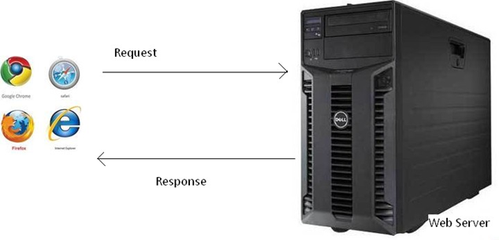
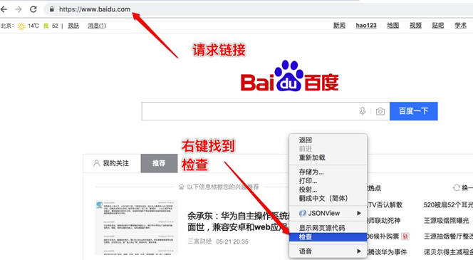
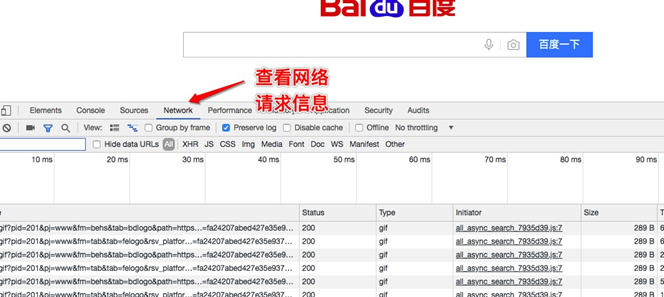
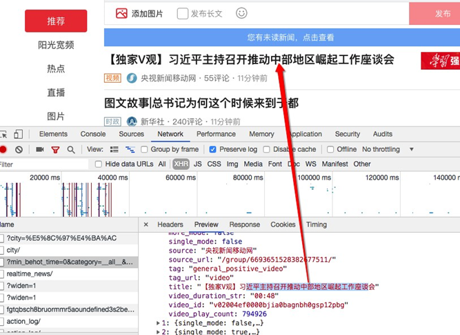

什么是爬虫？
请求网站并提取数据的自动化程序。
爬虫的基本流程
发起请求
通过HTTP库目标站点发起请求，即发送一个Request，请求可以包含额外的headers等信息，等待服务器响应。获取响应内容
如果服务器能够正常响应，会得到一个Response，Response的内容便是所要获取的页面内容，类型可能有HTML，Json字符串，二进制数据（如图片视频）等类型。解析内容
得到的内容可能是HTML，可以用正则表达式，网页解析库进行解析。可能是Json，可以直接转为Json对象解 析，可能是二进制数据，可以做保存或者进一步的处理。保存数据
保存形式多样，可以存为文本，也可以保存至数据库，或者保存特定格式的文件。
Request和Response

- 浏览器发送消息给给该网址所在的服务器，这个过程叫做HTTP Request。
- 服务器收到浏览器发送的消息后，能够根据浏览器发送消息的内容，做响应处理，然后把消息回传给浏览器。 这个过程叫做HTTP Response。
- 浏览器收到服务器的Response信息后，会对信息进行响应处理，然后展示。
查看浏览器的请求和响应：


Request
Request是请求,在浏览器输入地址,回车,就是一个请求。
请求方式
主要有get、post两种类型，另外还有HEAD、PUT、DELETE、OPTIONS等。请求的URL
URL 全称统一资源定位符，如一个网页的文档、一张图片、一个视频等都可以用URL来确定。请求头
包含请求时的头部信息，如User-Agent、host、Cookies等信息请求体
请求时额外携带的数据如表单提交时的表单数据。
Response
Response是响应,服务器根据请求,返回数据到浏览器显示,就是一个响应。
响应状态
有多种响应状态，如200代表成功、301跳转、404找不到页面、502服务器错误。响应头
如内容类型、内容长度、服务器信息、设置Cookie等等。响应体
最主要的部分，包含了请求资源的内容，如网页HTML、图片二进制数据等。
例如：
# 导入网络请求模块（该模块需要使用pip install requests 安装）
import requests
# 创建请求头
headers = {
"User-Agent":'Mozilla/5.0 (Macintosh; Intel Mac OS X 10_13_6) AppleWebKit/537.36 (KHTML, like Gecko) Chrome/74.0.3729.131 Safari/537.36'
}
# 发送网络请求
response = requests.get(url='http://www.baidu.com',headers = headers)
# 获取请求的内容
print(response.content.decode('utf-8')) print(response.text)
# 获取响应头
print(response.headers)
# 状态码
print(response.status_code)
能抓取什么样的数据？
网页文本
如HTML文档、Json格式的文本等。图片
获取到的是二进制文件，保存为图片格式。视频
获取到的是二进制文件，保存为视频格式。
例如： 获取图片
import requests
# 创建请求头
headers = {
"User-Agent":'Mozilla/5.0 (Macintosh; Intel Mac OS X 10_13_6) AppleWebKit/537.36 (KHTML, like Gecko) Chrome/74.0.3729.131 Safari/537.36'
}
# 发送网络请求
response = requests.get(url=['https://www.baidu.com/img/bd_logo1.png'](http://www.baidu.com/img/bd_logo1.png'%2Cheaders),headers = headers)
# 将获取的二进制内容进行保存
with open('./baidu.png','wb') as f: f.write(response.content)
网页的解析方式
直接处理
例如： 请求回来的就是一段字符串，我们可以简单处理后直接保存Json解析
例如： Ajax请求回来的一般都是json格式的数据，我们就需要从json中拿出我们想要的数据。正则表达式
BeautifulSoup
PyQuery
XPath
解析库的选择可以根据爬取的网页具体情况酌情选择。
我们抓到的网页和浏览器中看到的不一样
情况： 有时候我们抓取到的内容都是HTML代码，css链接以及JavaScript的链接，真正网页中的数据并不会出现在我们抓却到的内容中。
原因：是因为有些内容的链接是放在JavaScript代码中的，所有说我们抓取到的只是HTML网页中的JavaScript外链， 并不是真正的网页显示的内容。
解决： 我们需要找到真正的内容链接就好了。
例如： 我们请求一下头条
import requests
# 创建请求头
headers = {
"User-Agent":'Mozilla/5.0 (Macintosh; Intel Mac OS X 10_13_6) AppleWebKit/537.36 (KHTML, like Gecko) Chrome/74.0.3729.131 Safari/537.36'
}
# 发送网络请求
response = requests.get(url=['https://www.toutiao.com/'](http://www.toutiao.com/'%2Cheaders),headers = headers) print(response.text)
实际内容在下面的链接里：

解决动态网页的渲染问题
如上面的方法，分析Ajax请求，拿到请求链接，再次发送请求，获取内容。
使用selenium/webdriver (自动化的测试工具)，就像浏览器一样加载网页。
from selenium import webdriver chrome = webdriver.Chrome() chrome.get('https://www.baidu.com')
保存
- 文本
- 数据库
- 二进制文件（图片，视频 ，音频）